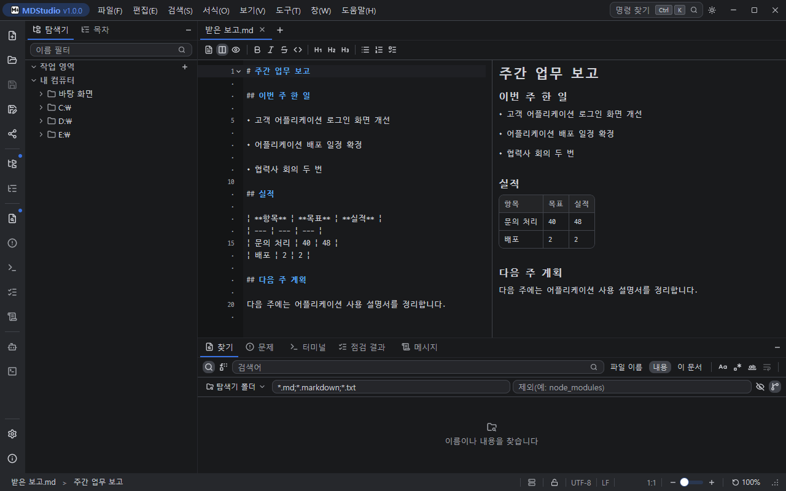

받은 한글·Word 문서를 가져와 고치기
메일로 받은 아래한글 문서와 Word 문서를 마크다운 문서로 가져와, 찾기와 바꾸기로 고친 뒤 저장합니다. 약 7분 걸립니다.
참고: 연습 파일은 앱에서 F1 로 이 페이지를 열면 받을 수 있습니다(연습 파일 열기 링크).
만들 결과
- 아래한글 문서
받은 보고.hwpx를 가져와 고친받은 보고.md - Word 문서
받은 보고.docx를 가져온받은 보고 (2).md
준비
- 위의 연습 파일 열기 링크를 클릭합니다.
이렇게 보입니다: 문서 폴더 아래 MDStudio 따라하기\07-tut-import 폴더에 받은 보고.hwpx 와 받은 보고.docx 가 복사되고, 복사한 폴더를 알리는 알림이 나옵니다.
1단계: 한글 문서 가져오기
- 파일 > 열기(Ctrl+O)를 클릭합니다.
- 열기 창에서 문서 폴더의
MDStudio 따라하기\07-tut-import폴더로 갑니다. 받은 보고.hwpx를 선택하고 열기 버튼을 클릭합니다.
이렇게 보입니다: 같은 폴더에 받은 보고.md 가 생기고 새 탭으로 열립니다. 제목은 # 주간 업무 보고, 절 제목은 ## 실적 처럼 바뀌고 표도 옮겨집니다. 원본 받은 보고.hwpx 는 그대로입니다.

막히면: 열기 창에
.hwpx파일이 보이지 않으면 창 아래 파일 형식 목록에서 「지원하는 모든 문서」를 선택합니다. → 다른 형식 문서 열기
2단계: 글머리 기호를 목록으로 바꾸기
이 문서의 할 일 세 줄은 • 로 시작하는 문단입니다. 마크다운 목록 기호 - 로 바꿉니다.
- 검색 > 바꾸기(Ctrl+H)를 클릭합니다. 소스 편집기 위에 찾기 줄이 열립니다.
- 찾을 텍스트 칸에
•를 입력합니다. 글머리 기호 뒤의 공백까지 입력합니다. - Tab 을 눌러 바꿀 텍스트 칸으로 가서
-를 입력합니다. - [모두 바꾸기] 버튼을 클릭합니다.
이렇게 보입니다: 세 줄이 - 고객 어플리케이션 로그인 화면 개선 처럼 바뀌고, 미리보기에 글머리 기호 목록이 나옵니다.
3단계: 잘못 쓴 단어 고치기
- 검색 > 바꾸기(Ctrl+H)를 클릭합니다.
- 찾을 텍스트 칸에
어플리케이션을 입력합니다. - Tab 을 눌러 바꿀 텍스트 칸으로 갑니다. 앞 단계의
-가 남아 있으므로 Ctrl+A 를 누르고애플리케이션을 입력합니다. - [모두 바꾸기] 버튼을 클릭합니다.
- Esc 를 눌러 찾기 줄을 닫습니다.
이렇게 보입니다: 문서의 어플리케이션 세 곳이 모두 애플리케이션 으로 바뀝니다.
막히면: 잘못 바꿨으면 Esc 로 찾기 줄을 닫고 Ctrl+Z 를 누릅니다. 모두 바꾸기도 Ctrl+Z 한 번으로 실행 취소합니다. → 찾기와 바꾸기
4단계: 저장하기
- 파일 > 저장(Ctrl+S)을 클릭합니다.
이렇게 보입니다: 고친 내용이 받은 보고.md 에 저장됩니다.
5단계: Word 문서도 가져오기
- 파일 > 열기(Ctrl+O)를 클릭합니다.
- 같은 폴더에서
받은 보고.docx를 선택하고 열기 버튼을 클릭합니다.
이렇게 보입니다: 같은 이름의 받은 보고.md 가 이미 있으므로 덮어쓰지 않고 받은 보고 (2).md 가 생겨 새 탭으로 열립니다. Word 문서의 목록은 처음부터 - 목록으로 옮겨집니다.
다 했습니다
- 연습 폴더
MDStudio 따라하기\07-tut-import에 고친받은 보고.md와 Word 문서에서 가져온받은 보고 (2).md가 생겼습니다. - 다음 따라하기: 매주 쓰는 보고를 템플릿으로
- 엑셀·PDF·웹 페이지 가져오기는 다른 형식 문서 열기, 여러 파일에서 바꾸기는 찾기와 바꾸기를 봅니다.